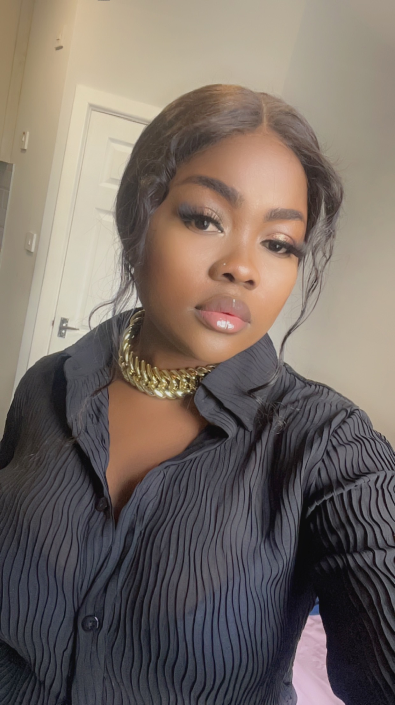

Nadine Yimdju Magam

Summary
I am experienced and qualified support worker who has worked with both young people and adults in a range of different care settings. My Flexibility, adaptability approach to work and shift patterns has always be one of the sources of my strength. I’m happy to travel for both shift and training purposes. I understand and recognise the importance of working together as a team and i have been always working as an active member of my team. Nevertheless, am also happy to work as an individual if need required. I enjoyed promoting the independence of the service user and ensure they attain their full potentiality through my acquired knowledge and experiences.
Education
- University of Douala- Economy(2013-2016)
- Institut Matamfen-Advanced level in Accounting(2012-2013}
Work Experience
A24 Group (March 2022- Present)
Working in different settings with both young and elderly people with physical and mental difficulties.
Taking care of their needs and being a companion to them.
Making sure the working environment is clean and the clients are safe.
Work as a team to tackle complex situations that comes up!
Florence agency (January 2021- February 2022)
Supporting with day-to-day needs and activities
Accompanying them on outings and undertaking activities such as cooking and developing life skills
Implementing and assessing the placement plan for each individual .
Contact Me
Hobbies